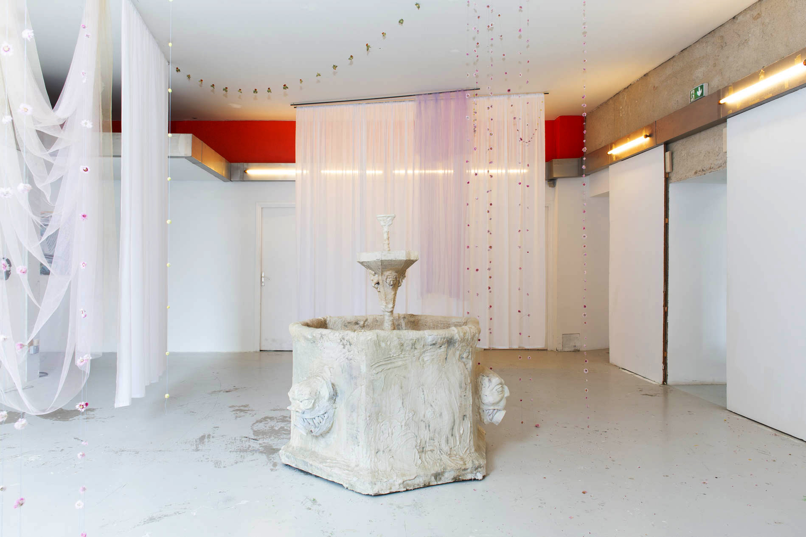
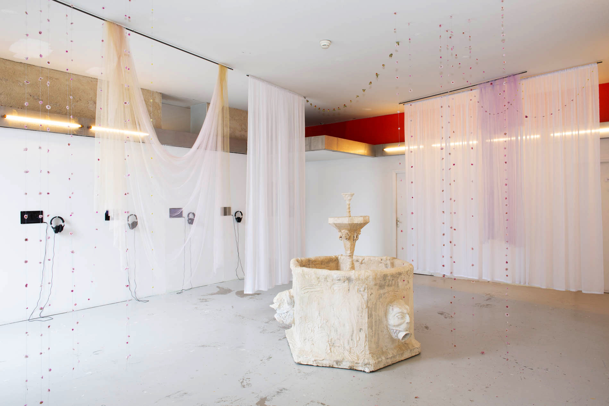

Dried flowers on thread silk, suspended cotton veils and tulle, text to listen with headphones, broadcast on an mp3 player
Installation realised for exhibition Voilà l’été, Expérience Generator 2014-2020, currating by Judith Quentel, director of EESAB, Quimper,
Anne Langlois and Patrice Goasduff, directors of 40mcube art center, Rennes
Quartier Général, Quimper,
June 2022
Photographs : Margot Montigny


On the picture : Stanislas Paruzel, Fontain, (sculpture) 2022 & Harilay Rabenjamina, is this my bio?, (videos on tablets) 2021